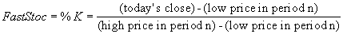

Stochastic is an oscillator that measures the position of a stock or security compared with its recent trading range, indicating overbought or oversold conditions.
It displays the current day’s price at a percentage relative to the security’s trading range (high/low) over the specified period.

In a Slow Stochastic, the highs and lows are averaged over a slowing period. The default is usually 3 for slow and 1 (no slowing) for fast. The line can then be smoothed using an exponential moving average, a Weighted moving average, or a simple moving average %D. Confirmation Buy/Sell signals can be read at intersections of the %D with the %K as well.
The Stochastic Oscillator always ranges between 0% and 100%. A reading of 0% shows that the security's close was the lowest price that the security has traded during the preceding x-time periods. A reading of 100% shows that the security's close was the highest price that the security has traded during the preceding x-time periods. When the closing price is near the top of the recent trading range (above 80%), the security is in an overbought condition and may signal a possible correction. An oversold condition exists below %20. Prices close near the top of the range during uptrends and near the bottom of the range during downtrends.